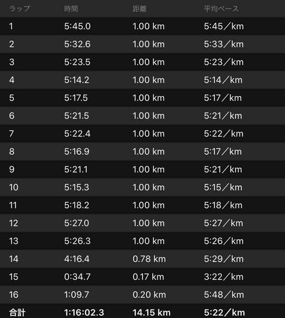
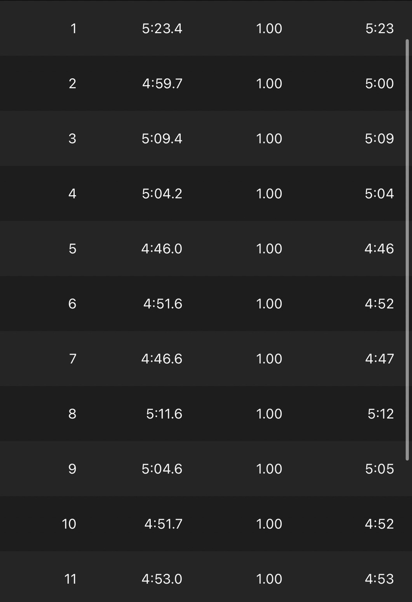
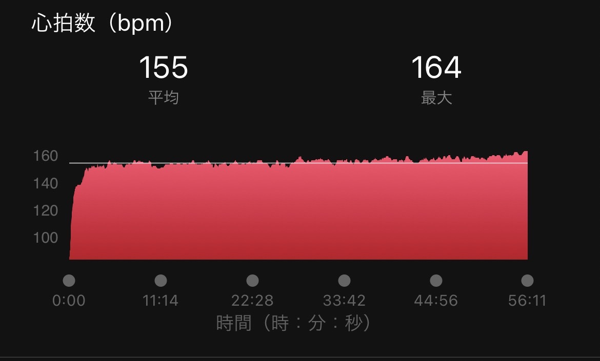

最近、Twitterで「ジョグが大切だ」っていう投稿をよく見かけるので、自分も自分なりの解釈を書こうと思います。これに関しては自分も同意見です。ポイント練よりもジョグの方が大事だと言っても過言ではないと思います。(以下、距離を走ることが大事だと書いてますが、最近の考えでは距離も大事ですが長い時間走ることも大事だと考えています。なんなら、距離よりも、ペースを遅くしてでも時間を長く取る方がいいと感じてきています。)
ジョグの目的①：フォームの意識
これは他の人の投稿でも見たので、ある程度似ている話題だと思います。私のジョグの目的は、動作の確認です。どこの筋肉で体を動かしているか、フォームは理想に近いだろうか、というところです。具体的には、足はハムストの筋肉を使う、腕は肩甲骨を意識して引くことができているか、接地はフラットくらいでかつ体より離れすぎたところに着いていないか、などです。やや速いペース(4'30くらい)になると案外接地など楽にできるのですが、ゆっくりのペース(5'00〜6'00)でフォームを正確にやるというのが大事です。ゆっくりのペースでできないことが、いざレースペースになってできるわけないというのが私の考えです。遅いペースの方が意外と難しいです。ちなみに前にも書きましたが普段のジョグは速くしないのを意識してます(これでも速いと思う人はいるかもしれませんが)。5'00はほとんど切らないです。理由は上のも含めて色々ありますが、単純に疲れて慢性疲労になり、ポイント練に支障をきたす可能性があるというのも一つです。ちなみにジョグはこんな感じです。asicsのライトレーサーで最近はやってます。少し前まではズームフライFKでした。
2022追記
最近のジョグは以下です。

Avg5'00を意識しながらもそれを切るくらいで走っています。
それに追加して、最近は脈拍jogという、心拍数を150程度をキープして走るjogをしています。これをやると閾値ベースが上がっていき、長距離の能力も伸びそうだなと思い取り入れています。取り入れたきっかけは、テレビで見た青山学院がやっていたからです。彼らは脈拍150で3'20くらいで走るそうで、キロ4は軽いjogだそうです。そりゃあんだけハーフ走れるなと思いました。

↑これはキロ3'45ペース
ここで大事なのは、
・物事を素直に取り入れること
・それを継続すること
の2点だと思います。
新しいものを取り入れることは大事ですが、手当たり次第やるのではなく、自分に合った物を見つけ継続すること。
中学・高校生の時、受験期でも成績が伸びない人に限って参考書を沢山持っている人などいなかったでしょうか？そして成績がいい人は同じものをボロボロになるまで使っていなかったでしょうか？
今のジョグシュー
以前はライトレーサーなどでジョグをやっていましたが、最近はASICSのエボライド3を履いています。（ASICS好きみたいになるけど、ナイキのリアクトシリーズも好きでよく履きます。）この靴はキロ5~3'30くらいまでのペースに対応できるので、普段のjogから、キロ4くらいの脈拍jogまで対応できるのでとてもオススメです。少し前はhokaのマッハを履いてやっていましたが、値段も手が出しやすく、ソールも柔らかすぎず反発をもらえるのでこれからもリピートしようかなと思っています。
ジョグの目的②：体を強くする
2つ目のジョグの目的は体づくりです。結局、走ることが一番走るための筋肉をつけることができると思います。(ただ、走ることだけで筋肉をつけようとするととてつもなく走る必要があると思うので、体幹などの補強も大事です。) 体験談だと、最初は当然ながらキロ6分くらいで30キロ走るのはとても辛かったです。ですが、3〜4回目くらいになってくると、最後まで足が疲れず、キロ5分くらいでも楽に走れるようになりました。長く走るために体が変わったののかなという感じです。やはり、記録を出したいならジョグは大切だと思います。月間走行距離にこだわるとかいう話ではないのですが、やはり速い人は距離を踏んでいます。正直、これは間違いではないと思います。自分は大学入学時月間距離が100キロちょっとでしたが、それが200キロ、300キロ、400キロと増えるに従って、練習の楽さは変わり、記録も伸びていきました。特に、月間400キロを踏んだ次の月からは実感できるほど練習が楽でした。なんか、体が疲れなくなったなと感じました。(実際400キロでも少ないと思いますが、うちの大学では多い方なんです、、) ちなみに体づくりとは具体的に、毛細血管を強く、増やすことだと考えています。これによって疲労の回復が早くなったり、持久力がついたりします。毛細血管について詳しい訳ではないので、知りたい方はググって下さい。 ⚪︎補足 高校時代は県で地方大会に行けるくらいの学校だったので、今より走っていたと思います。なので、基礎体力はあった上での話ですので全員に当てはまるとは思いません。平日は1日20キロ以上は確実に走っていたので月は500〜600は低く見積もっても走っていたのかな？という感じです。おかげで怪我も多かったですが。大学では陸上を続けるつもりがなかったので最初は妥協してましたm(_ _)m
中距離選手の距離踏み
中距離選手はあまり距離を走らない傾向にあるとは思いますが、私は走った方がいいと思います。長距離選手ほどではないですが、800で1分台出したいとかなら、月300キロは少なくても走るのが目安かなと思います。実際自分は中距離練は全然やらないですが、800もそこそこ走れます。(元からスピード適正はあると思う。) 自分の身近な中距離選手でタイムが伸びない人の特徴は、圧倒的に後半の垂れ方が大きいです。特にラスト300と200。そしてフォームもバタついてきます。自分の800のレースは、1週目と2週目の差があまりなく、後半上がることが多いですし、落ちても2秒ほどです。距離を走ることを意識してからは、800の走りが明らかに変わり、1週目終わりで後半まだ走れる足が残っています。ラスト300くらいでも疲れている、重い、という感覚があまりないです。中距離選手で多いのは、1週目速く2週目はできるだけ粘る、ですが、スピードからのアプローチだけでなく、スタミナからのアプローチもありかなと思います。
長距離選手の距離踏み
まず、私自身が強豪校の選手ではないので、自分のレベルで書くと月に500〜600キロはある程度のレベルで走るなら必要だと思います。自分自身できていなくて、合宿のある月を除いたら最高で月400キロくらいしか走れていませんが、これ以上のレベルにいくなら最低それくらいかなという感じです。箱根に出るような学校に行ってる友人から話をよく聞くのですが、月間700〜800キロくらい走る時は走るらしいですし、距離を走ることは全てではないですが、速くなるのは間違いないと思います。前にも書きましたが、速い人は距離を走っています。(例外も当然あるが。)走ることは体を作ってくれますし、フォームも効率化してくれると考えています。長い距離で速くなりたい人は時間が無い中でも頑張って距離を増やすといいと思います。ただ、距離を踏むことだけに意識を囚われると、本来の目的を失ってしまうので、なぜ走っているのかを考えて距離を踏むことが大事です。ジョグだけでなく、ポイント練も意図を考えて練習をやることが大切です。(距離踏みに関しては賛否両論あると思いますが、距離少なくて速い人ももう少しjogが増えればもっと速くなるだろうと思います。ただ、社会人で走る時間を作るのは難しいと思うので、質高くコスパよく練習できているのは凄いですね。私は走らないで速くなる才能はないので、もう少し距離を踏みたいです。)
5000m14分台の目安
※以下完全に個人の感想です
ちなみに一つの目安として、5000で14分台出すなら、月間400くらいかなぁと思います。月400キロくらい走ると、ある程度強度の高いポイント練習もできると思うので、自分の体の7割のポイント練習を続けていって、だんだんその7割の強度を上げていけば、出るようになると思います。自分は一応一度14分台を出していますが、本当に特別な練習はしていません。(2019年時)むしろ強度もそんなに高くないと思います。おそらくみんながしてる練習と同じレベルの練習かなと思います。違いがあるとすれば、練習やジョグの意識、考え方辺りにあると思います。ただガムシャラにやるのではなく、意図を考えることによって質は上がっていきます。高校時代ベストは15'06ですが、受験で体が鈍ったので、大学の初めは16'10、多少戻ってきたなくらいで15'30からのスタートでした。(それでも速いと思う人はいるかもしれませんが)14分台は普段のジョグを大切にし、7割のポイント練習と、たまに8〜9割くらいのポイント練習の組み合わせで出せるタイムだと思います。だいたい、1000×5(r=400ジョグ)3'00、3'20で10000とかを楽にこなせるようになったら出るなと感じました。まあ、そこから14分台まではまた時間がかかりましたが、、。ギリギリまで追い込む練習をあまりしてなかったので、レペ系ももう少し入れれば良かったなと思っています。14分台までは才能がなくても、努力で達成できるレベルなのかなと思います。
最後に
最近よく見る文章で、距離を走らなくても速くなるとか、距離を踏んでも速くない人はいるとかいうものもよく見かけます。それは個人差がありますし、漠然と走っているだけなら当たり前のことです。そういった記事を読んで、じゃああまり走らなくてもいいんだって勘違いする人が多く出そうですが、そうではないです。おそらく伝えたいのは、考えないで練習しても効果は薄いということです。人は楽な道があればそっちに逃げたくなるもので、走らなくて速くなるっていう意見があればそっちに飛びついてしまうかもしれません。だけど、努力を怠って結果が出るのでしょうか。考えることをやめてはいけないのではないでしょうか。